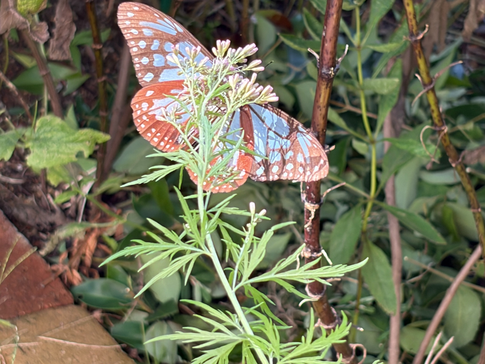
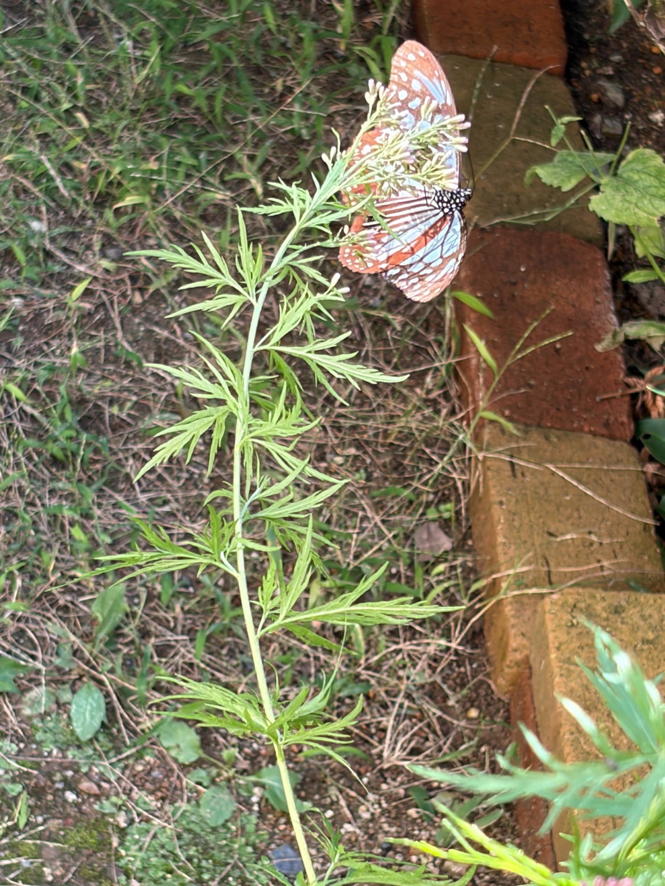
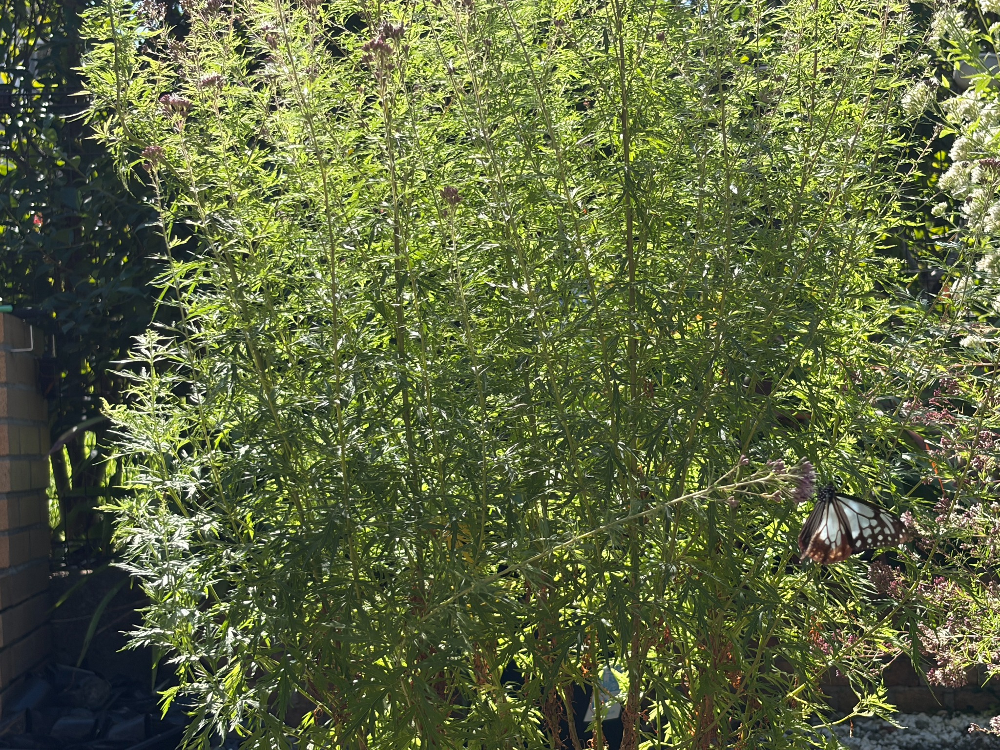

庭にアサギマダラ2匹が飛来。今回は羽衣でも吸蜜
10月17日、庭にアサギマダラが2匹飛来しました。この日は9：30から14：30にかけて庭の様子を見ていましたが、今回は羽衣でも蜜を吸う姿が見られました。
10月12日にも庭に2匹が訪れていたものの、そのときは羽衣での吸蜜は見られませんでした。赤紫色の蕾をたくさんつけた株を眺めながら、花が開けばこちらにも来てくれるだろうかと楽しみにしていたので、実際に花房にとまって蜜を吸う姿を見られたことがうれしかったです。
庭に来てくれるだけでもうれしい蝶ですが、自分が育てている羽衣を吸蜜に利用してくれると、花を育ててきた楽しみがまた一つ増えます。蕾の頃から見守ってきた枝先にアサギマダラがとまる姿には、開花そのものとは違った喜びがありました。
今回訪れたアサギマダラは、12日に訪れた個体とは明らかに違いました。両日とも長時間観察していたため、その違いが分かりました。同じ庭を訪れていても、前回とは別の個体が立ち寄ってくれたことに、蝶を迎える楽しみを感じます。
この日見かけた2匹が、どちらも羽衣で蜜を吸っていたかどうかまでは分かりません。ただ、庭に2匹が来てくれて、羽衣でも蜜を吸う姿を見られたので、その様子を今回の記録に残しておきたいです。
開花は約50％。開いた花と蕾が混じる状態
この日の羽衣は、株全体を見た私の目安で、約50％が開花した状態でした。花を一つずつ数えた割合ではありませんが、まだ蕾も多く残り、咲いている花とこれから開く花が混じっています。
12日は赤紫色の蕾が目立っていましたが、その5日後には開花が進み、羽衣も花を楽しめる段階になりました。すべての花房が一斉に咲くのではなく、枝先ごとに咲き具合が違うため、株の中には開いた花が見える場所も、蕾がまとまって残る場所もあります。
細く切れ込んだ緑の葉は引き続き多く、何本もの茎が伸び、その先に花房がついています。葉と葉の間に空間がありながら、全体では枝葉が重なって茂っているところに、羽衣らしい繊細さを感じます。
花が開いた部分だけを見るのもきれいですが、その周りに蕾が残っている姿も好きです。今咲いている花を楽しみながら、次に開く花も待てる。約半分まで咲き進んだ今は、そんな途中の楽しみがある時期です。
旺盛に育ち、草丈は約180cmに
羽衣の生育は非常に旺盛で、草丈は約180cmに達しました。細かな葉をつけた茎が次々と伸び、枝先には多くの花房が広がっています。葉の繊細な見た目とは対照的に、育つ勢いには驚かされます。
株全体を眺めると、葉も茎もよく茂り、庭の中で存在感のある姿になりました。そこへ花が咲き始め、さらにアサギマダラも訪れるようになったことはうれしいのですが、大きく育ったことで、支え方も考える必要が出てきました。
ここまで高くなると、自立は難しくなります。茎が長く伸びた先に枝葉や花房がつくため、そのままの姿で立たせておくことの難しさを感じています。
来年は摘芯によって草丈を抑えたいと考えています。今年の育ち方を見て、花を咲かせることだけでなく、庭で無理なく支えられる高さや、管理のしやすさも大切だと感じました。
羽衣らしい葉の姿や花を楽しみながら、来年はもう少し扱いやすい大きさに育てられたらと思います。今年は約180cmまで伸びたので、来年の育て方を考えるときには、この育ち方を思い出しながら工夫してみたいです。
写真1：蕾の残る花房で翅を広げるアサギマダラ
近くから撮った写真では、羽衣の花房にとまったアサギマダラが翅を広げています。浅葱色の模様と茶色い縁取りが大きく見え、その手前には、枝分かれした花房と細かな蕾が重なっています。
蝶の体の一部は花房に隠れていますが、花にとまりながら翅を広げた姿を残すことができました。細い茎と繊細な葉に、大きな翅の蝶が重なると、羽衣の姿がいつもと違って見えます。
花房にはまだ閉じた蕾が多く、その中に開いた花が見えます。株全体が満開になる前でも、開いた花が吸蜜に利用されていることが、今回の観察で分かりました。

写真2：細かな葉と枝先の花房、そこにとまる蝶
少し引いて撮った写真では、花房だけでなく、そこへつながる茎や葉の様子も分かります。細く切れ込んだ葉が茎に沿ってつき、その先の花房にアサギマダラがとまっています。
蝶だけを大きく写した写真とは違い、羽衣のどのような枝先を利用していたのかが見える一枚になりました。葉の形、花房のつき方、蝶の大きさを一緒に眺められるところも気に入っています。
まだ蕾を残した枝先に蝶がとまり、開いた花で蜜を吸う。12日には見られなかった姿が、今回は羽衣でも見られました。花が咲き進むことと、蝶が実際に利用することが重なり、5日間の変化を身近に感じます。

写真3：旺盛に茂った株と、花房にとまるアサギマダラ
株を広く写した写真では、多数の茎が立ち上がり、細かな葉を茂らせている様子が分かります。枝先のあちこちに花房があり、赤紫色の蕾を残した部分と、白っぽく花が開いた部分が見えます。
その右下に、アサギマダラがとまっています。近接写真では蝶の翅に目が向きますが、こうして離れて見ると、茂った羽衣の中で、どのあたりの花房を利用していたかも分かります。
株の上の方だけでなく、横へ伸びた枝にも花房がついています。蝶がとまっていたのも、そのように外側へ伸びた花房の一つでした。
草丈約180cmまで育った羽衣の茂り方と、そこを訪れた蝶を同じ写真に残すことができました。花房を近くから見るだけでは分からない株の広がりも写っており、生育記録としても、この日の庭の思い出としても、振り返りたくなる一枚です。

同じ庭でも、3種類の開花には違いがありました
この日は、庭で育てているフジバカマの仲間を見比べることもできました。株全体を眺めた私の目安では、白フジバカマ原種系は100％で満開、フジバカマ原種系は約80％、羽衣は約50％の開花でした。
同じ庭で育てていても、咲き進み方はそろいません。先に満開を迎えた花があり、満開へ近づいている花があり、羽衣のように、まだこれから開く蕾を多く残している花もあります。
花を眺める側としては、咲く時期に少しずつ違いがあることで、次の開花を待つ楽しみが続きます。先に咲いた花を見ながら、遅れて咲く花の変化も追えるので、庭の秋を長く楽しめるように感じます。
羽衣はこの中では開花がゆっくりでしたが、約半分まで咲いた段階で、アサギマダラが吸蜜に利用してくれました。満開になるまで待たなくても、すでに蝶を迎える花になっていたことがうれしいです。
吸蜜の中心は原種系。それでも羽衣にも訪れました
17日に庭を見ていた範囲では、アサギマダラの吸蜜の約90％は、約80％まで開花したフジバカマ原種系という印象でした。時間を計って出した数字ではありませんが、この日はそちらで蜜を吸う姿が多く見られました。
その一方で、羽衣でも吸蜜がありました。庭の中で最もよく利用されていた花ではなくても、実際にとまって蜜を吸ってくれたことは、羽衣を育てている私には大切な出来事です。
12日は白フジバカマ原種系での吸蜜が中心で、羽衣では見られませんでした。17日はフジバカマ原種系が中心となり、羽衣でも吸蜜する姿がありました。花の咲き具合が変わる中で、利用される場所にも違いが見られています。
ただ、両日に訪れたのは別の個体です。花の咲き具合だけが変わったわけではないため、この違いをそのまま開花の進み方だけに結び付けることはできません。種類ごとの花の量や、その日の条件、訪れた個体による違いなども関係しているのかもしれません。
今回、羽衣について残しておきたいのは、「12日には吸蜜が見られず、約50％まで開花した17日には吸蜜が見られた」という変化です。
花房の数だけでなく、開いた花を見る楽しみ
12日の羽衣にも、蕾はたくさんついていました。株全体に花房が広がっていても、その多くが閉じた蕾の段階では、まだ吸蜜に利用できる花は限られていたのかもしれません。
17日は開花が進み、その羽衣で蜜を吸う姿が見られました。この二日間だけで理由を断定することはできませんが、蕾の数だけでなく、実際にどのくらい花が開いているかを見ることの大切さを、改めて感じます。
人の目には、赤紫色の蕾がまとまってついている姿も十分にきれいです。けれど、蝶が蜜を吸う場所として利用するには、花が開いていることも大切です。花房が多くついているというだけでは、そのときに利用できる花の状態までは分からないのだと思います。
これからは株全体の咲き具合を見るだけでなく、アサギマダラがとまった花房に、開いた花と蕾がどのように混じっているかも見ていきたいです。
羽衣も、庭の吸蜜場所の一つになりました
前回は、羽衣での吸蜜が見られない中で、庭に育つフジバカマの仲間全体が、アサギマダラを迎える環境になっているのではないかと感じていました。
今回は、羽衣そのものでも蜜を吸う姿を見ることができました。香りが庭への飛来にどの程度関わったのかは分かりませんが、羽衣の開いた花が吸蜜場所として利用されたことは、今回のうれしい変化です。
花を育てていると、つい満開の姿を待ちたくなります。それでも、まだ約半分の開花で、蕾を残した今の羽衣にも、蝶が利用する花がありました。満開へ向かう途中にも、見ておきたい場面があるのだと感じます。
これから残りの蕾が開いたとき、羽衣で蜜を吸う姿をまた見られるでしょうか。庭のほかのフジバカマの咲き具合とあわせて、どの花を利用するのかを楽しみに見守りたいと思います。
10月17日は、庭にアサギマダラ2匹が飛来し、約50％まで開花した羽衣でも吸蜜を確認できた日になりました。蕾の頃から待っていた姿を写真に残すことができ、羽衣を育てる楽しみがまた一つ増えました。
旺盛に育って草丈約180cmになった今年の姿を覚えておき、来年は摘芯で高さを抑えながら育てたいと考えています。花を楽しみ、蝶を迎え、庭で管理しやすい姿も考える。今年の羽衣は、来年の育て方につながる気づきも与えてくれました。